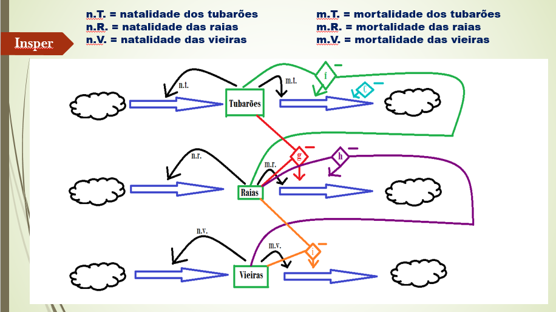

Portfolio de Matheus Duarte

Ficha
Projeto: Modelagem de um carro queimando pneu
Matéria: Modelagem e Simulação do Mundo Físico
Professor: Fábio Pelicano
Grupo: Individual
Contato
Software
Design
Modelagem
Humanas
Eletrônica
Descrição do projeto:
Esse foi o primeiro projeto da matéria, o projeto que nos introduziu ao mundo da modelagem.
Nesse projeto deveríamos modelar um sistema populacional, mais especificamente um sistema populacional de raias, tubarões e vieiras.
Como objetivo queríamos ver como esse sistema se comportaria ao longo do tempo, em relação à predação natural desses animais e à predação humana.
Para modelá-lo utilizamos Equações à Diferenças implementadas em um código de Python.